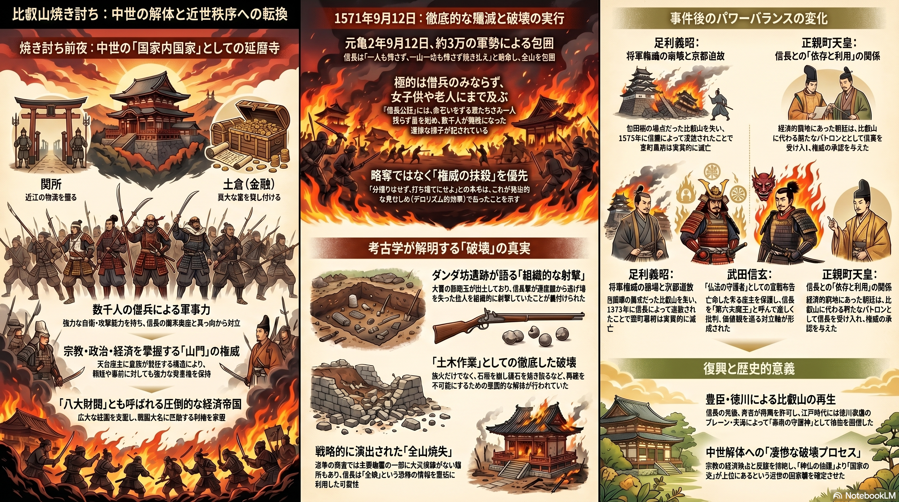
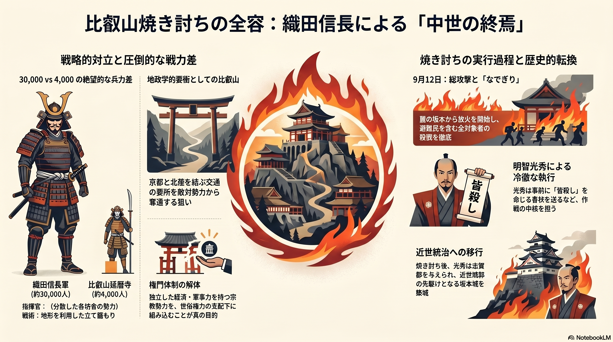

資料01：中世の解体と実証される「破壊」の真実

【資料概要説明：中世国家内国家の終焉】
■ 焼き討ち前夜： 比叡山延暦寺は「関所（物流支配）」「土倉（金融）」、そして「僧兵（軍事）」という、世俗大名に匹敵する「不入の権」を持った巨大経済帝国であった。
■ 殲滅の実行： 元亀2年9月12日、約3万の軍勢により包囲を完遂。信長の目的は略奪ではなく、既存の宗教的・世俗的「権威の抹殺」を優先したテロリズム的効果を狙ったものであった。
■ 考古学的検証： 近年の調査（ダンダ坊遺跡等）では、組織的な射撃の痕跡や、土木作業レベルでの徹底した石垣の解体跡が見つかっており、単なる放火を超えた「物理的破壊」の執念が裏付けられている。
■ 歴史的意義： この凄惨なプロセスを経て宗教権威を上位に置く「神仏の社会」から、世俗権力が上位に立つ「国家の社会」への近世化が確定した。
資料02：比叡山焼き討ちの全容と戦略的背景

【資料概要説明：戦略的対立と近世統治への移行】
■ 圧倒的な戦力差と地政学： 織田軍30,000に対し、延暦寺側は4,000。比叡山は京都と北陸を結ぶ交通の要衝であり、敵対勢力（浅井・朝倉）からの奪還が急務であった。
■ 実行プロセス： 坂本からの放火を開始し、避難民を含む全対象者の殺戮を徹底した。これは単なる軍事作戦ではなく、独立した経済・軍事力を持つ権門体制の解体そのものを目的としていた。
■ 明智光秀の役割： 焼き討ちに対し消極的であったという通説に反し、光秀は事前に「皆殺し」を命じる書状を送るなど、冷徹な執行者として作戦の中核を担っていた実像が示されている。
■ 戦後の秩序： 焼き討ち後、光秀は志賀郡を与えられ、坂本城を築城。これは寺社勢力の排除後に「近世城郭」によって地域を統治する、新たな支配モデルの先駆けとなった。